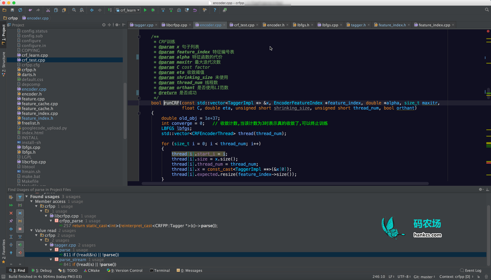
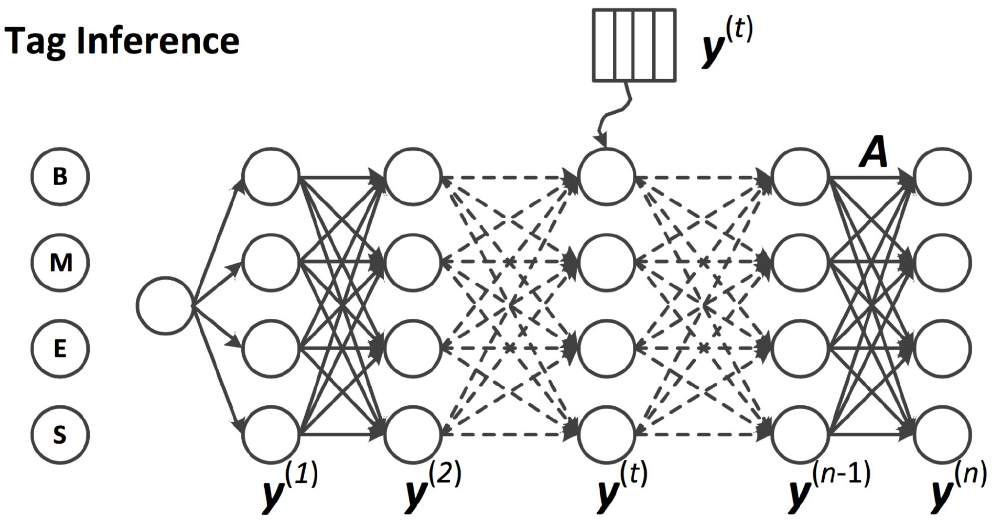
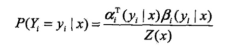
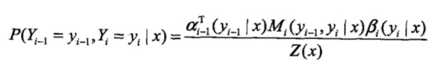
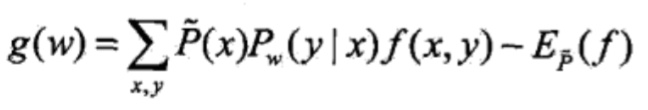
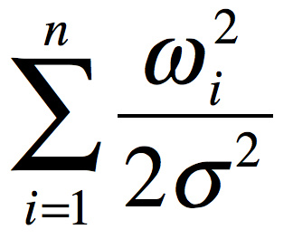
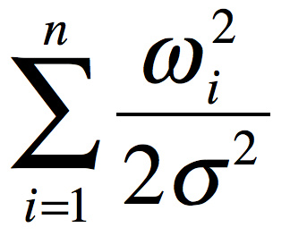
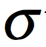
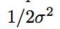
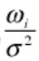

本文按照调用顺序抽丝剥茧地分析了CRF++的代码，详细注释了主要函数，并指出了代码与理论公式的对应关系。内容包括拟牛顿法的目标函数、梯度、L2正则化、L-BFGS优化、概率图构建、前向后向算法、维特比算法等。

背景知识请参考《条件随机场》。
训练
先从训练开始说起吧
- /**
- * 命令行式训练
- * @param argc 命令个数
- * @param argv 命令数组
- * @return 0表示正常执行,其他表示错误
- */
- int crfpp_learn(int argc, char **argv)
该函数解析命令行之后调用：
- /**
- * 训练CRF模型
- * @param param 参数
- * @return
- */
- int crfpp_learn(const Param ¶m)
该函数会调用：
- /**
- * 训练
- * @param templfile 模板文件
- * @param trainfile 训练文件
- * @param modelfile 模型文件
- * @param textmodelfile 是否输出文本形式的模型文件
- * @param maxitr 最大迭代次数
- * @param freq 特征最低频次
- * @param eta 收敛阈值
- * @param C cost-factor
- * @param thread_num 线程数
- * @param shrinking_size
- * @param algorithm 训练算法
- * @return
- */
- bool learn(const char *templfile,
- const char *trainfile,
- const char *modelfile,
- bool textmodelfile,
- size_t maxitr,
- size_t freq,
- double eta,
- double C,
- unsigned short thread_num,
- unsigned short shrinking_size,
- int algorithm);
该函数先读取特征模板和训练文件
- /**
- * 打开配置文件和训练文件
- * @param template_filename
- * @param train_filename
- * @return
- */
- bool open(const char *template_filename, const char *train_filename);
这个open方法并没有构建训练实例，而是简单地解析特征模板和统计标注集：
- /**
- * 读取特征模板文件
- * @param filename
- * @return
- */
- bool openTemplate(const char *filename);
- /**
- * 读取训练文件中的标注集
- * @param filename
- * @return
- */
- bool openTagSet(const char *filename);
回到learn方法中来，做完了这些诸如IO和参数解析之后，learn方法会根据算法参数的不同而调用不同的训练算法。取最常用的说明如下：
- /**
- * CRF训练
- * @param x 句子列表
- * @param feature_index 特征编号表
- * @param alpha 特征函数的代价
- * @param maxitr 最大迭代次数
- * @param C cost factor
- * @param eta 收敛阈值
- * @param shrinking_size 未使用
- * @param thread_num 线程数
- * @param orthant 是否使用L1范数
- * @return 是否成功
- */
- bool runCRF(const std::vector<TaggerImpl *> &x, EncoderFeatureIndex *feature_index, double *alpha, size_t maxitr,
- float C, double eta, unsigned short shrinking_size, unsigned short thread_num, bool orthant)
计算梯度
创建多个CRFEncoderThread，平均地将句子分给每个线程。每个线程的工作其实只是计算梯度：
- /**
- * 计算梯度
- * @param expected 梯度向量
- * @return 损失函数的值
- */
- double TaggerImpl::gradient(double *expected)
梯度计算时，先构建网格：
- void TaggerImpl::buildLattice()
由于CRF是概率图模型，所以有一些图的特有概念，如顶点和边：
- /**
- * 图模型中的节点
- */
- struct Node
- /**
- * 边
- */
- struct Path
buildLattice方法调用rebuildFeatures对每个时刻的每个状态分别构造边和顶点：
- for (size_t cur = 0; cur < tagger->size(); ++cur)
- {
- const int *f = (*feature_cache)[fid++];
- for (size_t i = 0; i < y_.size(); ++i)
- {
- Node *n = allocator->newNode(thread_id);
- n->clear();
- n->x = cur;
- n->y = i;
- n->fvector = f;
- tagger->set_node(n, cur, i);
- }
- }
- for (size_t cur = 1; cur < tagger->size(); ++cur)
- {
- const int *f = (*feature_cache)[fid++];
- for (size_t j = 0; j < y_.size(); ++j)
- {
- for (size_t i = 0; i < y_.size(); ++i)
- {
- Path *p = allocator->newPath(thread_id);
- p->clear();
- p->add(tagger->node(cur - 1, j), tagger->node(cur, i));
- p->fvector = f;
- }
- }
- }
这也就是大家经常看到的类似如下的图：

然后计算每个节点和每条边的代价（也就是特征函数乘以相应的权值，简称代价）：
- /**
- * 计算状态特征函数的代价
- * @param node 顶点
- */
- void FeatureIndex::calcCost(Node *n) const
- {
- n->cost = 0.0;
- #define ADD_COST(T, A) \
- do { T c = 0; \
- for (const int *f = n->fvector; *f != -1; ++f) { c += (A)[*f + n->y]; } \
- n->cost =cost_factor_ *(T)c; } while (0)
- if (alpha_float_)
- {
- ADD_COST(float, alpha_float_);
- }
- else
- {
- ADD_COST(double, alpha_);
- }
- #undef ADD_COST
- }
- /**
- * 计算转移特征函数的代价
- * @param path 边
- */
- void FeatureIndex::calcCost(Path *p) const
- {
- p->cost = 0.0;
- #define ADD_COST(T, A) \
- { T c = 0.0; \
- for (const int *f = p->fvector; *f != -1; ++f) { \
- c += (A)[*f + p->lnode->y * y_.size() + p->rnode->y]; \
- } \
- p->cost =cost_factor_*(T)c; }
- if (alpha_float_)
- {
- ADD_COST(float, alpha_float_);
- }
- else
- {
- ADD_COST(double, alpha_);
- }
- }
其中fvector是当前命中特征函数的起始id集合，对于每个起始id，都有连续标签个数种y值；n->y是当前时刻的标签，由于每个特征函数都必须同时接受x和y才能决定输出1或0，所以要把两者加起来才能确定最终特征函数的id。用此id就能在alpha向量中取到最终的权值，将权值累加起来，乘以一个倍率（也就是所谓的代价参数cost_factor），得到最终的代价cost。
对于边来说，也是类似的，只不过对每个起始id，都有连续标签个数平方种y值组合。
这部分对应

前向后向算法
网格建完了，就可以在这个图上面跑前向后向算法了:
- /**
- * 前向后向算法
- */
- void forwardbackward();
该方法依次计算前后向概率：
- for (int i = 0; i < static_cast<int>(x_.size()); ++i)
- {
- for (size_t j = 0; j < ysize_; ++j)
- {
- node_[i][j]->calcAlpha();
- }
- }
- for (int i = static_cast<int>(x_.size() - 1); i >= 0; --i)
- {
- for (size_t j = 0; j < ysize_; ++j)
- {
- node_[i][j]->calcBeta();
- }
- }
计算前向概率的具体实现是：
- void Node::calcAlpha()
- {
- alpha = 0.0;
- for (const_Path_iterator it = lpath.begin(); it != lpath.end(); ++it)
- {
- alpha = logsumexp(alpha, (*it)->cost + (*it)->lnode->alpha, (it == lpath.begin()));
- }
- alpha += cost;
- }
其中cost是我们刚刚计算的当前节点的M_i(x)，而alpha则是当前节点的前向概率。lpath是入边，如代码和图片所示，一个顶点可能有多个入边。
对应：

后向概率同理略过。
前后向概率都有了之后，计算规范化因子：
- Z_ = 0.0;
- for (size_t j = 0; j < ysize_; ++j)
- {
- Z_ = logsumexp(Z_, node_[0][j]->beta, j == 0);
- }
对应着

关于函数logsumexp的意义，请参考《计算指数函数的和的对数》。
于是完成整个前后向概率的计算。
期望值的计算
节点期望值
所谓的节点期望值指的是节点对应的状态特征函数关于条件分布 的数学期望。
的数学期望。
- for (size_t i = 0; i < x_.size(); ++i)
- {
- for (size_t j = 0; j < ysize_; ++j)
- {
- node_[i][j]->calcExpectation(expected, Z_, ysize_);
- }
- }
calcExpectation具体实现是：
- /**
- * 计算节点期望
- * @param expected 输出期望
- * @param Z 规范化因子
- * @param size 标签个数
- */
- void Node::calcExpectation(double *expected, double Z, size_t size) const
- {
- const double c = std::exp(alpha + beta - cost - Z);
- for (const int *f = fvector; *f != -1; ++f)
- {
- expected[*f + y] += c;
- }
- for (const_Path_iterator it = lpath.begin(); it != lpath.end(); ++it)
- {
- (*it)->calcExpectation(expected, Z, size);
- }
- }
第一个for对应下式的求和

概率求和意味着得到期望。
第二个for对应边的期望值。
边的期望值
所谓边的期望指的是边对应的转移特征函数关于条件分布 的数学期望。
的数学期望。
- /**
- * 计算边的期望
- * @param expected 输出期望
- * @param Z 规范化因子
- * @param size 标签个数
- */
- void Path::calcExpectation(double *expected, double Z, size_t size) const
- {
- const double c = std::exp(lnode->alpha + cost + rnode->beta - Z);
- for (const int *f = fvector; *f != -1; ++f)
- {
- expected[*f + lnode->y * size + rnode->y] += c;
- }
- }
对应下式的求和

这样就得到了条件分布的数学期望：

梯度计算
- for (size_t i = 0; i < x_.size(); ++i)
- {
- for (const int *f = node_[i][answer_[i]]->fvector; *f != -1; ++f)
- {
- --expected[*f + answer_[i]];
- }
- s += node_[i][answer_[i]]->cost; // UNIGRAM cost
- const std::vector<Path *> &lpath = node_[i][answer_[i]]->lpath;
- for (const_Path_iterator it = lpath.begin(); it != lpath.end(); ++it)
- {
- if ((*it)->lnode->y == answer_[(*it)->lnode->x])
- {
- for (const int *f = (*it)->fvector; *f != -1; ++f)
- {
- --expected[*f + (*it)->lnode->y * ysize_ + (*it)->rnode->y];
- }
- s += (*it)->cost; // BIGRAM COST
- break;
- }
- }
- }
–expected表示模型期望（条件分布）减去观测期望，得到目标函数的梯度：

有人可能要问了，expected的确存的是条件分布的期望，但观测期望还没计算呢，把条件分布的期望减一是干什么？
这是因为对观测数据（训练数据）来讲，它一定是对的，也就是在y!=answer_[i]的时候概率为0，在y=answer_[i]的时候概率为1，乘以特征函数的输出1，就等于1，这就是观测期望。
维特比算法
紧接着gradient函数还顺便调了一下TaggerImpl::viterbi：
- void TaggerImpl::viterbi()
- {
- for (size_t i = 0; i < x_.size(); ++i)
- {
- for (size_t j = 0; j < ysize_; ++j)
- {
- double bestc = -1e37;
- Node *best = 0;
- const std::vector<Path *> &lpath = node_[i][j]->lpath;
- for (const_Path_iterator it = lpath.begin(); it != lpath.end(); ++it)
- {
- double cost = (*it)->lnode->bestCost + (*it)->cost + node_[i][j]->cost;
- if (cost > bestc)
- {
- bestc = cost;
- best = (*it)->lnode;
- }
- }
- node_[i][j]->prev = best;
- node_[i][j]->bestCost = best ? bestc : node_[i][j]->cost;
- }
- }
- double bestc = -1e37;
- Node *best = 0;
- size_t s = x_.size() - 1;
- for (size_t j = 0; j < ysize_; ++j)
- {
- if (bestc < node_[s][j]->bestCost)
- {
- best = node_[s][j];
- bestc = node_[s][j]->bestCost;
- }
- }
- for (Node *n = best; n; n = n->prev)
- {
- result_[n->x] = n->y;
- }
- cost_ = -node_[x_.size() - 1][result_[x_.size() - 1]]->bestCost;
- }
其中prev构成一个前驱数组，在动态规划结束后通过prev回溯最优路径的标签y，存放于result数组中。
跑viterbi算法的目的是为了评估当前模型的准确度，以辅助决定是否终止训练。
正则化
为了防止过拟合，CRF++采用了L1或L2正则化：
- if (orthant)
- { // L1
- for (size_t k = 0; k < feature_index->size(); ++k)
- {
- thread[0].obj += std::abs(alpha[k] / C);
- if (alpha[k] != 0.0)
- {
- ++num_nonzero;
- }
- }
- }
- else
- {
- num_nonzero = feature_index->size();
- for (size_t k = 0; k < feature_index->size(); ++k)
- {
- thread[0].obj += (alpha[k] * alpha[k] / (2.0 * C));
- thread[0].expected[k] += alpha[k] / C;
- }
- }
以L2正则为例，L2正则在目标函数上加了一个正则项：
 +
+
其中，是一个常数，在CRF++中其平方被称作cost-factor，控制着惩罚因子的强度。可见要最小化目标函数，正则化项也必须尽量小才行。模型参数的平方和小，其复杂度就低，于是就不容易过拟合。关于L1、L2正则化推荐看Andrew Ng的ML公开课。
目标函数加了一项之后，梯度顺理成章地也应加上的导数：
+
这也就是代码中为什么要自加这两项的原因了：
- thread[0].obj += (alpha[k] * alpha[k] / (2.0 * C));
- thread[0].expected[k] += alpha[k] / C;
L-BFGS优化
梯度和损失函数有了，之后就是通用的凸函数LBFGS优化了。CRF++直接将这些参数送入一个LBFGS模块中：
- if (lbfgs.optimize(feature_index->size(), &alpha[0], thread[0].obj, &thread[0].expected[0], orthant, C) <=
- 0)
- {
- return false;
- }
据说这个模块是用一个叫f2c的工具从FORTRAN代码转成的C代码，可读性并不好，也就不再深入了。
- // lbfgs.c was ported from the FORTRAN code of lbfgs.m to C
- // using f2c converter
- //
- // http://www.ece.northwestern.edu/~nocedal/lbfgs.html
有兴趣的话看看《数值优化：理解L-BFGS算法》即可。
预测
预测就简单多了，主要对应下列方法：
- bool TaggerImpl::parse()
- {
- CHECK_FALSE(feature_index_->buildFeatures(this)) << feature_index_->what();
- if (x_.empty())
- {
- return true;
- }
- buildLattice();
- if (nbest_ || vlevel_ >= 1)
- {
- forwardbackward();
- }
- viterbi();
- if (nbest_)
- {
- initNbest();
- }
- return true;
- }
主要的方法也就是建立网格和维特比这两个，由于前面训练的时候已经分析过，这里就不再赘述了。
Reference
http://mi.eng.cam.ac.uk/~cz277/doc/Slides-CRFASR-CSLT.pdf
赞！
请问一下：Node::calcException()函数中的第一行：“const double c = std::exp(alpha + beta – cost – Z)”，我理解减去cost是因为代码中的alpha变量和beta变量都含有cost，因此需要减去一个。但是这与公式P(Y=yi|x)=Alpha(yi|x)*Beta(yi|x)/Z(x)不一致，而且我在很多材料里面都看到类似的公式。按照这个公式来说貌似对应的代码是std::exp(alpha + beta – Z )，但我感觉减去一个cost似乎是有道理的。 烦请指教，多谢。
你的理解是正确的，公式毫无疑问也是正确的，只不过CRF++是这么实现的而已，每个node的α和β在实现上都加上了cost：
void Node::calcAlpha()
{
alpha = 0.0;
for (const_Path_iterator it = lpath.begin(); it != lpath.end(); ++it)
{
alpha = logsumexp(alpha, (*it)->cost + (*it)->lnode->alpha, (it == lpath.begin()));
}
alpha += cost;
}
void Node::calcBeta()
{
beta = 0.0;
for (const_Path_iterator it = rpath.begin(); it != rpath.end(); ++it)
{
beta = logsumexp(beta, (*it)->cost + (*it)->rnode->beta, (it == rpath.begin()));
}
beta += cost;
}
所以多了一个cost。
请教一下大神，我在用CRF训练大的语料时，比如20万的语料，要19个小时。。有并行的CRF分词器吗？还有一个问题，CRF支持增量训练模型吗？我要优化CRF，又要重新训练一遍是吗？这个好浪费时间呀。。。
快速训练用crfsgd
并行的CRF分词：https://github.com/hankcs/HanLP
增量训练可以实现，无非是用旧模型的参数作为新模型的初始参数。但暂未看到开源实现。
好的，谢谢。我试试crfgd的训练。还有就是，比如要优化统计分词，发现badcase，将badcase正确标注好，放到之前的语料中重新训练是吗？
你好，我看了crfsgd，CRFsuite都是一些词性标注的demo，分词的没有找到。
不错，最近也在看这个